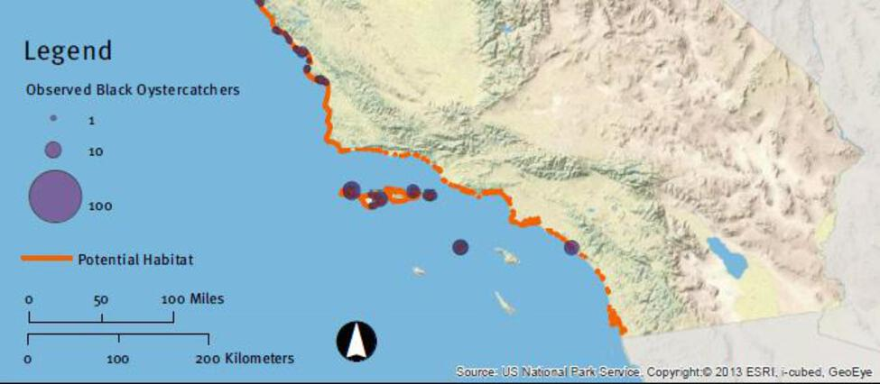
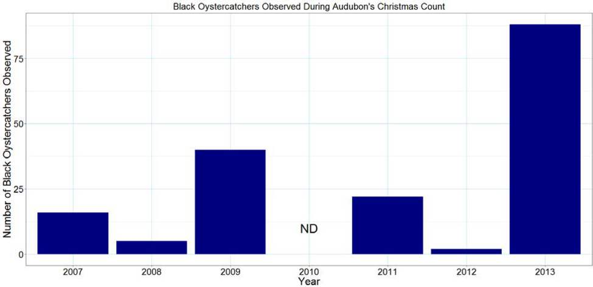

This black shorebird with a bright red bill is a critical species of conservation concern because of the key role it plays in coastal ecosystems and its senstivity to disturbance by human activities while breeding.
Black Oystercatchers (Haematopus bachmani)
Map of observations

A map showing the location of suitable habitat (orange) for black oystercatchers (Haematopus bachmani) along the coast of the Channel Islands and the mainland from Southern to Central California. The density of oystercatchers at different locations in 2011 is shown by the diameter of the purple circles. Figure credit: Modified from Weinstein et al. 2014.
Click for Details
In 2011, approximately 20 percent of the suitable habitat (orange) for black oystercatchers (Haematopus bachmani) was surveyed. A total of 176 adult or sub-adult black oystercatchers were detected at the five islands in Channel Islands National Marine Sanctuary. Density at different locations is shown by the diameter of the purple circles. The northern Channel Islands population was conservatively estimated to be between 779-854, which is 14 to 16 percent of the estimated total population in California. For more information, consult Figure App.F.13.4 in the CINMS 2016 Condition Report.Abundance by site (CINP data)

A figure showing the number of black oystercatchers observed at 20 sites across the Channel Islands from 1990 - 2015. Figure credit: Channel Islands National Park.
Click for Details
Number of black oystercatchers (Haematopus bachmani) observed during surveys at 20 rocky shore sites by Channel Islands National Park. Data are collected opportunistically. Curved lines represent statistically smoothed means. For more information, consult Figure App.F.13.5 in the CINMS 2016 Condition Report.Abundance on Santa Cruz Island (Audubon data)

A figure showing the number of black oystercatchers observed on Santa Cruz Island during the Audubon Christmas Bird Count from 2007 to 2013. Data source: Audubon Christmas Bird Count; Figure credit: R. Freedman/NOAA.